実験レポート ・ 2026 年 11 月 24 日
ドット絵のスキル 3 つで、パチンコの出玉グラフのゲームの絵を作った
作者が見つけたドット絵の AI 用スキル 3 つ（pixelfx、Frostwind、CyberSprite）を使って、パチンコの出玉グラフを眺めるだけのゲーム『今日も打とーっと』の絵を全部作りました。スキルごとの入れ方・最小の命令・自分の開発への組み込み方と、使って分かった良い点と癖をまとめます。下の見本は、ゲームと同じ pixelfx の効果をこのページの中で動かしたものです。押すと、連チャンの色で「当たりの光」が出ます。
その場で動く見本
結果のまとめ
| スキル | このゲームで使った所 | 作った数 | 向いている用途 |
|---|---|---|---|
| pixelfx | 当たりの光・花火・紙吹雪・雨を、ゲームの中でコードのまま毎コマ描く。金粉を 1 つ新しく作った | 既存の効果 4 種を使用、新しい効果 1 種（180 コマの繰り返し、4 回描き直し） | ブラウザのゲームに光る効果を足す。ほかのエンジン向けにスプライトシートを書き出す |
| Frostwind | 開店待ちの列に並ぶ 5 人。絵の大きさを「1.70 m = 26 画素」の縮尺で決めた | 5 人 × 2 コマ（待つ・歩く） | 現実の寸法と自然の法則から、筋の通ったドット絵の世界を組み立てる |
| CyberSprite | 主人公・顔・台・自動ドア・店の外と中・晩ごはん。図形の命令をスクリプトで作って流した | 36 枚（11 のプロジェクト、書き出した PNG は 12 個）、命令 2,320 個 | 決めたパレットだけで、エージェントが 1 画素ずつ正確に描く。画像の取り込みと色合わせ |
かかった時間は、スキルを入れてからゲームと絵とレポートができるまで 約 1 時間 5 分。AI の費用は API の料金に換算して $22.20 です（下の「時間と費用」）。有料の API、画像生成のモデル、アカウントの作成は使っていません。
元の投稿と入手先
作者が示した入手先は 3 つです。X の投稿は、ブラウザで開かずに api.fxtwitter.com から本文を取得して読みました。
| スキル | 紹介した投稿 | 入手先 | ライセンス |
|---|---|---|---|
| pixelfx | BeyondTheBoxCN 氏（2026 年 11 月 19 日）。244 種の効果がコードで作られていて、Claude Code のスキルも付く、という紹介 | patch-gg/pixelfx（コミット 5294518） | MIT（一部は Hugo Duprez 氏の Sprite Fusion の効果を元にしたもので、同じく MIT） |
| Frostwind | marnold_mch 氏（2026 年 11 月 19 日）。エージェントが一貫したドット絵の世界を作れる「世界のコンパイラ」という紹介 | trinity-works/frostwind（コミット 537ed51） | MIT |
| CyberSprite | （作者が GitHub のリポジトリを直接示した） | kokuren333/CyberSprite（コミット 6c7417e） | Apache-2.0（試験用の生成画像の一部は対象外と NOTICE にある） |
作ったゲームの画面
主人公が「今日もパチンコ打とーっと」と言って店に走り込み、台を 1 つ選びます。あとは出玉グラフ（差玉の線）が伸びていくのを眺めるだけです。ゲーム内の 10:00〜22:00 を標準の速さで 3 分で遊び、閉店すると勝ち負けで晩ごはんが変わります。写真はどれも、ゲームの画面（384×216 のドット）を 2 倍にしたものです。
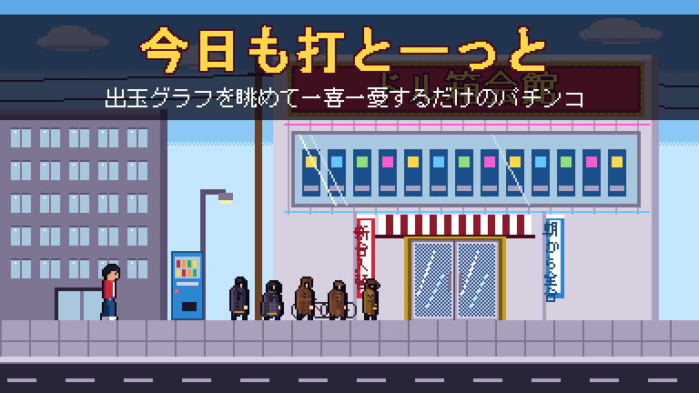
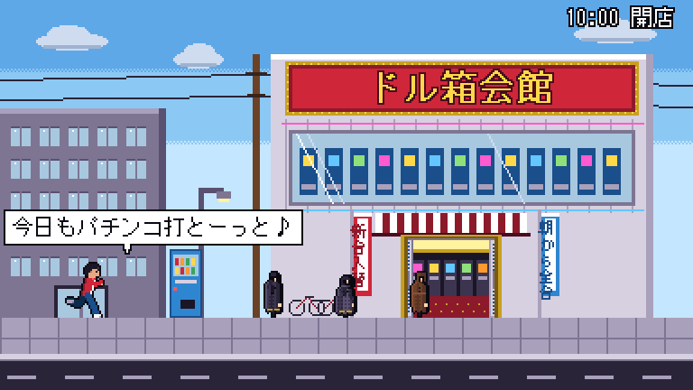
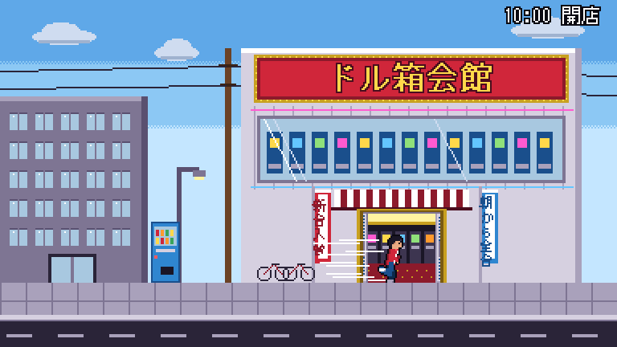
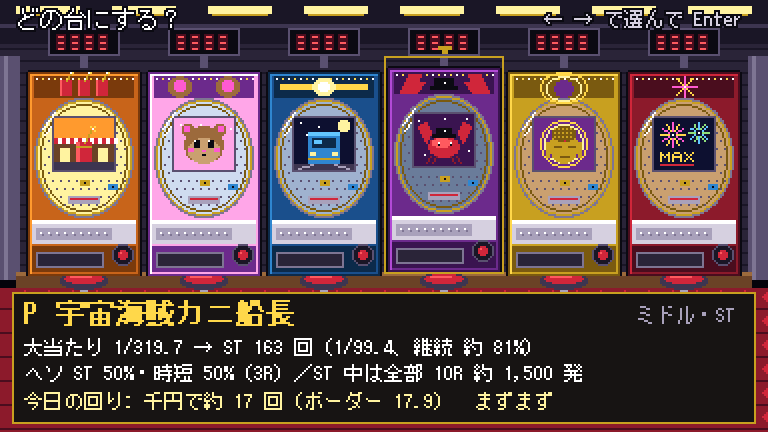
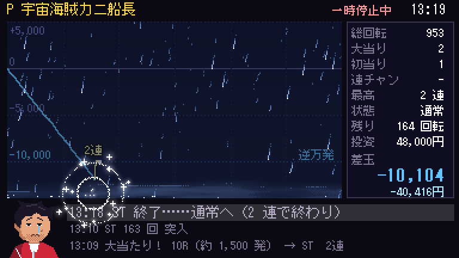
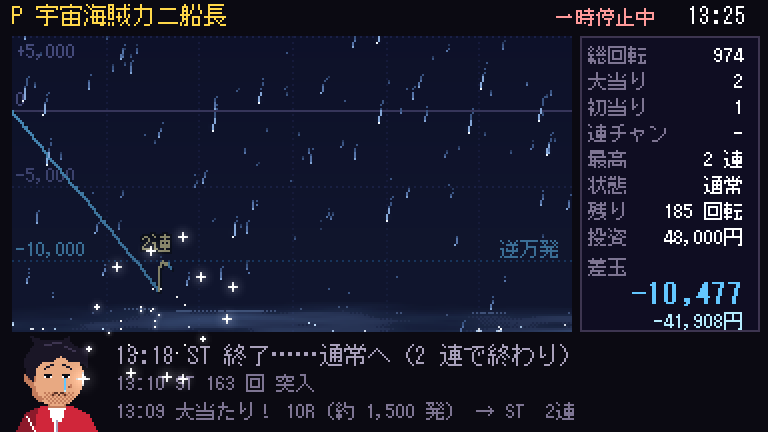
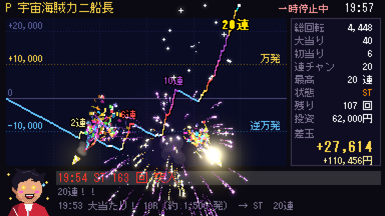
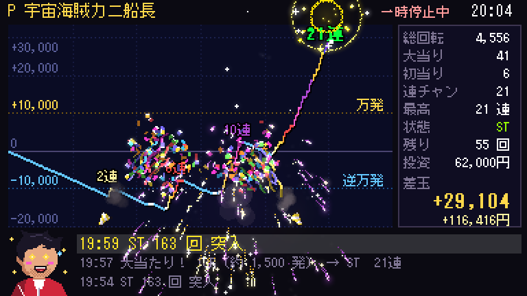
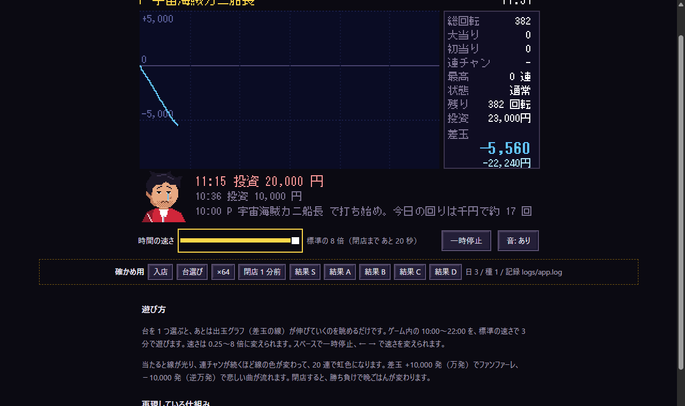
<input type="range"> で、キーボードでも動かせる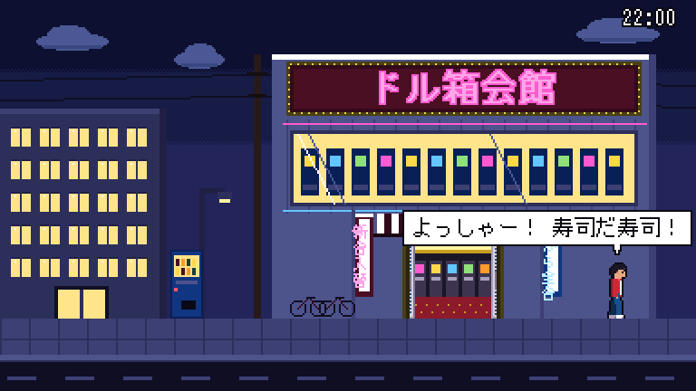
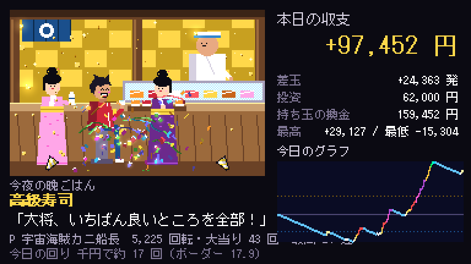
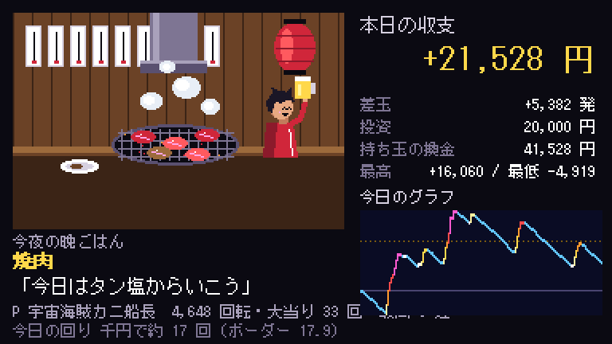
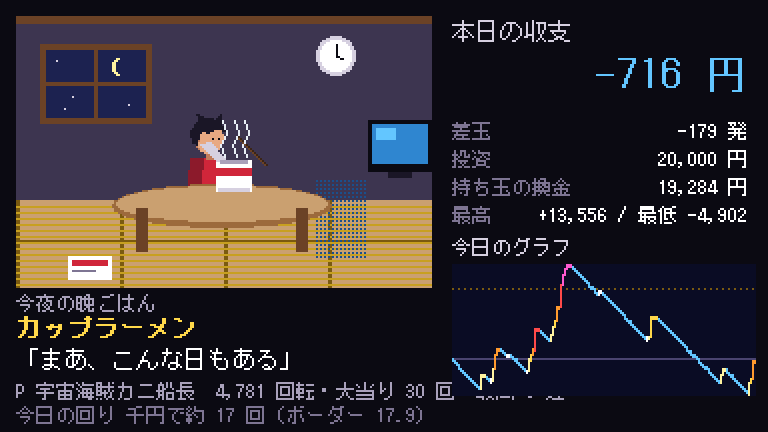
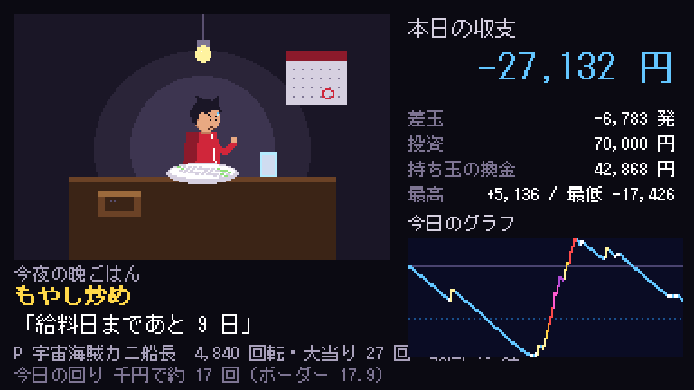
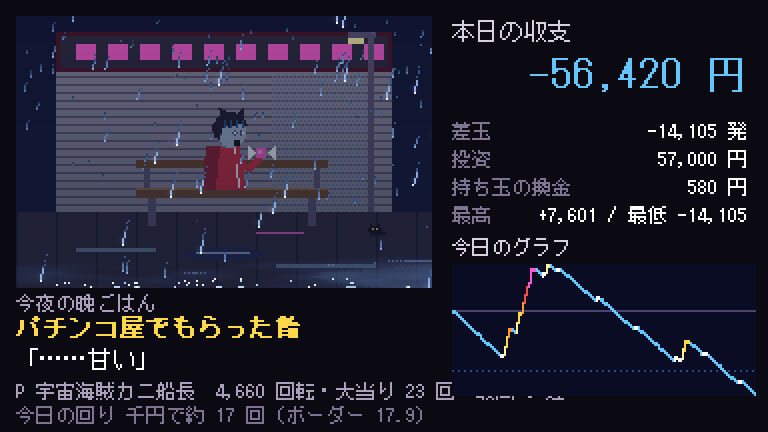
すぐ試せる手順
3 つとも、手元に取ってきて 1 つの命令で絵が出るところまでを書きます。命令は Windows の PowerShell で確かめました。Node.js、Python の uv、git が入っている前提です。
pixelfx（光る効果をコードのまま使う）
- 取ってきて、1 つ描く依存のパッケージは要りません。Node だけで動きます。
git clone https://github.com/patch-gg/pixelfx cd pixelfx node tools/list.mjs coin # 名前・説明で効果を探す node tools/render.mjs pickups/collect-burst # records/pickups/collect-burst/contact.png ができる node tools/render.mjs pickups/collect-burst --opts '{"palette":["#1e1206","#86520c","#f0b424","#fff6c4","#ffffff"]}' # 色を替えるcontact.pngは、時間を追ったコマの一覧です。AI はこの 1 枚を画像として読んで、動きの良し悪しを判断します。 - Claude Code にスキルとして入れるClaude Code の中で次の 2 つを打つか、
skills/pixelfxを~/.claude/skills/に写します。/plugin marketplace add patch-gg/pixelfx /plugin install pixelfx@pixelfx
あとは「コインを拾った時のきらめきを 5 案作って、良い 2 つを見せて」のように頼みます。スキルの最後の節は、作ったゲームを Patch（patch.gg）で公開するよう勧めます。公開は外へ出す操作なので、このゲームでは行っていません。 - 自分の画面に組み込む
src/coreと使う効果のファイルを写して import します。上の見本はこの形で、ファイル全体は約 40 行です。import { createFrame, clearFrame, createFx, composite } from './pixelfx/src/core/index.js'; import * as burst from './pixelfx/src/fx/pickups/collect-burst.js'; const frame = createFrame(224, 136), img = ctx.createImageData(224, 136); const fx = createFx(burst, { x: 112, y: 100, palette: ['#4a0d1e', '#d0263a', '#ff5a5f', '#ffd5b5', '#ffffff'] }); function tick(dt) { fx.update(dt); clearFrame(frame); fx.draw(frame); // 色の層と光の層へ描く composite(frame, img.data, 0x120a0b); // 背景の色の上に重ね、光を足す ctx.putImageData(img, 0, 0); // canvas は image-rendering: pixelated で拡大 }今の画面の上に重ねたい時は、compositeの背景にgetImageDataの画素を渡します（このゲームのdedama/js/fx.mjs）。
Frostwind（現実の寸法から人物を描く）
- 取ってきて、人物のシートを描く人物の道具（
tools/person.mjs）が要るのはthreeだけです。開発用の依存（Remotion・Playwright など）は入れずに済みます。git clone https://github.com/trinity-works/frostwind cd frostwind npm ci --omit=dev # three だけが入る node tools/person.mjs merchant # /tmp/frostwind-person/merchant.png ができる（Windows では今のドライブの直下、例: D:\tmp）
- Claude Code にスキルとして入れるスキル 3 つ（
add-character・add-world・frame-check）はリポジトリの.claude/skills/にあります。frostwind のフォルダで Claude Code を開くと読み込まれます。どれも Frostwind の中に人物や世界を足すための手順で、「表の行を足して、決まった検査を通す」形で書かれています。世界全体を見るにはnpm installとnpm run buildでdist/frostwood.htmlを作ります（このゲームでは作っていません）。 - 自分の開発に組み込む人物を 1 コマずつ画素の配列で受け取れます。このゲームでは次の形で 5 人を描き、PNG にしてから CyberSprite に取り込みました（
dedama/art/assets/folks.mjs）。import { paintPerson } from './frostwind/src/people.js'; import { resolveColour, writePng } from './frostwind/tools/resolve.mjs'; // 向き 2 = 横向き。状態は idle / walk / run、コマの番号、視線 const sp = paintPerson('merchant', 2, 0, 'idle', 'neutral'); const rgba = Buffer.alloc(sp.w * sp.h * 4); for (let i = 0; i < sp.w * sp.h; i++) { if (!sp.occ[i]) continue; // 何も無い画素 const [r, g, b] = resolveColour(sp, i); // 素材と光から色を決める rgba.set([r, g, b, 255], i * 4); } writePng('merchant.png', rgba, sp.w, sp.h);
CyberSprite（パレット番号で正確に描く）
- 取ってきて、1 枚描くPython 3.12 以上と
uvを使います。依存はロックファイルで固定されています。プロジェクトはフォルダで、書き出し先は命令を打った場所の下だけです。git clone https://github.com/kokuren333/CyberSprite cd CyberSprite uv sync --locked uv run csp new hero --size 32x32 # 既定のパレット cs-circuit-16 uv run csp -p hero op rect layer=L1 frame=0 x=8 y=8 w=16 h=16 color=5 filled=true uv run csp -p hero op outline layer=L1 frame=0 color=1 uv run csp -p hero validate uv run csp -p hero export image --out hero_x4.png --scale 4
どの命令も JSON を 1 つ返します。書き出しは、書いたファイルを読み直して画素を照合し、結果をverifiedに入れます。 - AI に使わせる
skills/の 5 冊（draw-sprite・animate・tileset・import-convert・validate-export）は、Claude Code のスキルの見出し（name・description）が無い手順書です。そのため自動では読み込まれません。「CyberSprite の skills/README.md を読んでから描いて」と頼むか、MCP のサーバーとしてつなぎます。uv sync --extra mcp claude mcp add --transport stdio cybersprite -- uv --directory C:/repos/CyberSprite run --extra mcp python -m cybersprite.mcp --root C:/sprites
（このゲームでは MCP を使わず、CLI を呼びました。） - 自分の開発に組み込む図形の命令を JSON の配列にして
applyに渡すと、1 回で描けます。このゲームの絵は全部この形です。色をパレットの名前で書ける小さな道具を作り、命令の配列を組み立てました（dedama/art/lib.mjs）。{"label": "hero", "ops": [ {"op": "line", "args": {"layer": "L1", "frame": 0, "x0": 15, "y0": 19, "x1": 18, "y1": 24, "color": 34, "brush": {"size": 3, "shape": "circle"}}}, {"op": "draw_rows", "args": {"layer": "L1", "frame": 0, "x": 13, "y": 3, "format": "sym", "rows": ["..HHHHH.", ".HHHHHHH", "HHHHSSSH"], "legend": {"H": 5, "S": 15}, "skip_transparent": true}}, {"op": "outline", "args": {"layer": "L1", "frame": 0, "color": 1}} ]}uv run --project <CyberSprite の場所> csp -p hero apply ops.json
主人公の走る姿は、コマごとに関節の角度を決めて、手足を太い線で描きました。CyberSprite の手順書も、関節の座標から手足を描く命令はスクリプトで作ってよいと書いています。
スキルごとの使用感
3 つは目的が違うので、比べて順位を付けることはしません。それぞれが得意な所と、使っていて手間がかかった所を書きます。
pixelfx
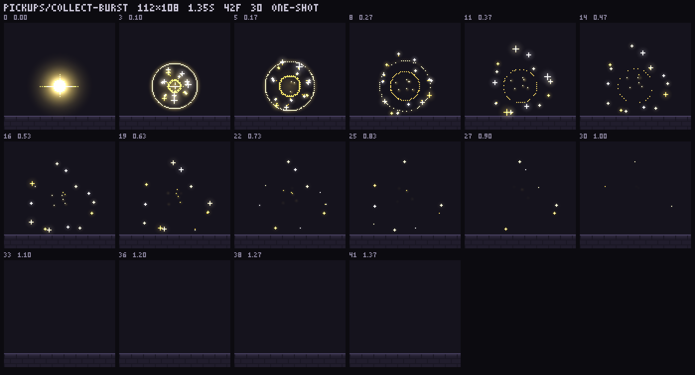
render.mjs が出す一覧（contact sheet）。当たりの光は、この効果の色を連チャンの色に替えて使った- 良い点: 効果がただの JavaScript なので、写して import するだけで画面に出ます。色の段階（palette）を渡すだけで色を替えられるので、連チャン数ごとの色にそのまま使えました。
render.mjsは 103 コマの一覧を 0.5 秒で描き、AI が自分で絵を見て直す作業が速く回ります。 - 良い点: スキルの「下書き → 描く → 見る → 直す」の手順が具体的です。金粉は 4 回描き直しました。1 回目は粒が細かく白っぽく、星空に見えました。「粒を大きく、面は中間の金色、白は光った瞬間だけ」と直しています。検査（
check.mjs）は「17 画素が画面の外に出ている」を見つけ、数字で知らせました。 - 癖: 効果は 24×38 画素の人物に合わせた大きさで描かれています。花火（240×248）は、このゲームの画面（高さ 216）より大きく出ました。
- 癖: 光の層を重ねるには、毎コマ画面の画素を読み直します（
getImageData）。効果が無いコマでは何もしない作りにしました。 - 気をつけた所: 強い白の光を 1 秒に何度も出すと、光に敏感な人に負担がかかります。当たりの光は 0.4 秒に 1 回、花火は 1.5 秒に 1 回までに絞りました。
- 向く用途: canvas で描くブラウザのゲーム。ほかのエンジンでも、
--sheetでスプライトシートと JSON を書き出せます。
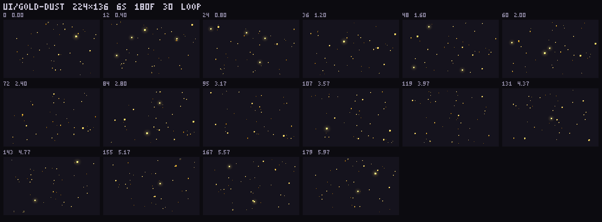
ui/gold-dust（6 秒で 1 周の繰り返し）。検査を通った 4 回目Frostwind
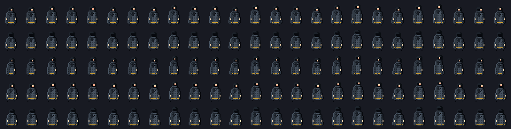
node tools/person.mjs merchant の出力。5 つの向き × 待つ 6・歩く 8・走る 8 コマ（3 分の 1 に縮小）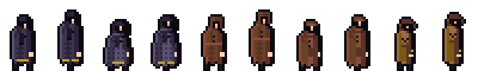
import_image）でゲームのパレットに合わせ、縁取りを付けた- 良い点: 大きさを「見た目で選ぶ」のではなく、現実の寸法から計算します。1.70 m の人が 26 画素なので、このゲームでは自販機を 38 画素（1.8 m）、自動ドアを 44 画素（2.9 m）、店を 140 画素（9 m）にしました。場面の中の物どうしの大きさがそろいます。
- 良い点: 人物の道具はブラウザも画像も使わず、決まった値から毎回同じ画素を出します。待つ・歩く・走るのコマが、足の運びまで計算で決まっています。
- 癖: 人物の服や体は、Frostwind の世界（北国の森・草原・沼・砂漠）の決まりに合わせて作られています。現代の服を着た主人公を作るには、服の描き方そのものをコードに足す必要がありました。今回は主人公を CyberSprite で描き、Frostwind の人はコート姿のまま「冬の朝の開店待ちの列」にしました。
- 癖: 付属のスキル 3 つは、Frostwind の中に人物や世界を足すための手順です。絵を取り出して別のゲームで使う手順は書かれていないので、上のような小さな台本を自分で書きました。
- 向く用途: Frostwind の中で、筋の通った 1 つの世界を育てること。別のゲームでは、縮尺の考え方と人物の道具を借りる使い方ができました。
CyberSprite
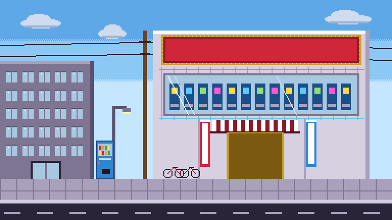
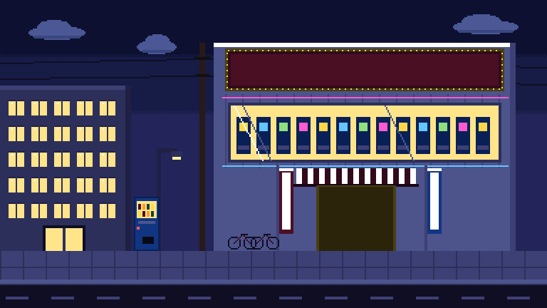
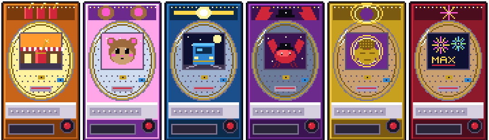
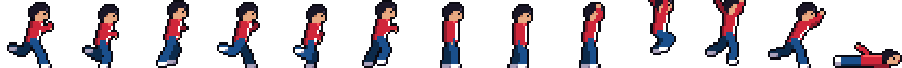
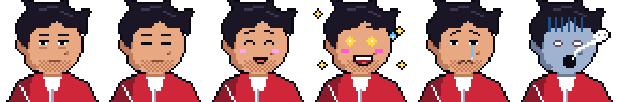
- 良い点: 画素はパレットの番号でしか持てません。そのため、昼と夜の街を 1 つの絵とパレット 2 つで作れました。どの絵も同じ 55 色だけを使うので、場面が変わっても色味がそろいます。
- 良い点: 命令のたびに検証が走り、間違いを場所つきで返します。飴の場面では「行の幅がそろっていない（命令 84 番）」と返り、猫の絵の 1 行が 1 文字長いことがすぐ分かりました。
- 良い点: 取り込みの仕組みで、Frostwind の人物の色をゲームのパレットに寄せられました。2 つのスキルを、画像のファイル 1 つでつなげます。
- 癖: CLI は 1 回の呼び出しに約 2 秒かかります（Python と uv の起動）。そのため 1 枚の絵に、作る・描く・検証・書き出しで 11〜14 秒かかりました。命令を 1 回の
applyにまとめると速くなります。 - 癖: 行の流し込み（
draw_rows）の「.」は、既定では下の絵を透明で消します。重ねて描く時はskip_transparent: trueが要ります。塗っていない所は透明のまま残るので、空を地面まで塗り忘れると、背景に穴が空きます（街で 1 回起きた）。 - 癖: 1.0 より前の開発版で、PyPI などへの配布はまだです。GUI（Circuit White）は追加の依存とビルドが要るので、今回は使っていません。
- 向く用途: エージェントが、決めたパレットの中で 1 画素ずつ正確に描くこと。生成した画像をドット絵に直して取り込むこと。
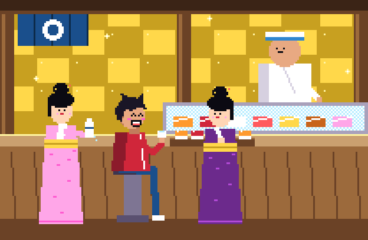
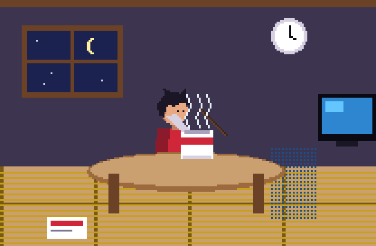
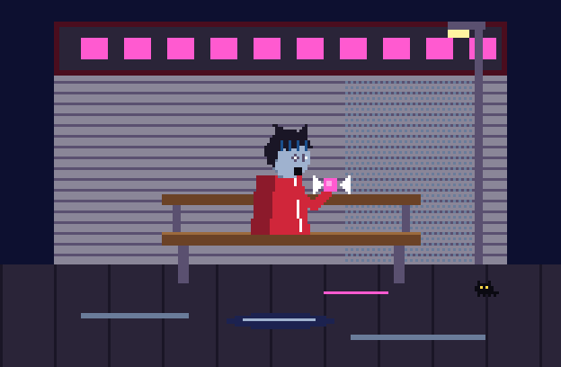
作った絵の数と、描き直した回数
| 絵 | 大きさ × コマ | スキル | 命令の数 | 描き直し | 直した所 |
|---|---|---|---|---|---|
| 主人公 | 32×32 × 13 | CyberSprite | 252 | 2 回 | 上げた腕が頭に隠れた |
| 顔 | 48×48 × 6 | CyberSprite | 165 | 2 回 | 絶望の白目と魂が肌に溶けた |
| 台 | 60×104 × 6 | CyberSprite | 343 | 1 回 | − |
| 店の前（昼・夜） | 384×216 × 2 | CyberSprite | 288 | 2 回 | 空の塗り残し |
| 自動ドア | 48×44 × 3 | CyberSprite | 111 | 1 回 | − |
| 店の中 | 384×216 | CyberSprite | 574 | 3 回 | 壁の塗り残し、描く順番 |
| 晩ごはん 5 場面 | 208×136 × 5 | CyberSprite | 587 | 1〜2 回 | 浮いた体、強すぎる網掛け、行の幅 |
| 開店待ちの 5 人 | 20×30 × 10 | Frostwind ＋ CyberSprite | 取り込み 1 | 1 回 | − |
| 金粉 | 224×136 × 180 | pixelfx | コード 1 本 | 4 回 | 粒が細かい、白すぎる、光りすぎる、はみ出し |
ゲームの絵のファイルは全部で 13 個、合わせて 60 KB です。台本を流せば全部作り直せます（node dedama/art/build.mjs、約 3 分）。
ゲームの中身（出玉の計算）
絵の実験ですが、ゲームの計算も確かめた数字を載せます。台ごとに、大当たり確率・確変・ST・時短・振り分け・1 ラウンドの出玉・回転率・電サポ・一種二種混合の小当たりを入れました。打ち出しは毎分 100 発、保留は 4 個までで、変動時間も入れています。テストは 57 個（計算 49、画面側 8）あり、長い試行の結果が仕様の理論値に合うかを確かめます。
| 台 | 大当たり確率（実測） | 継続（実測 / 理論） | 回転率（実測 / 仕様） | 勝つ日 | 万発の日 | 逆万発の日 |
|---|---|---|---|---|---|---|
| P 商店街ダイナマイト ミドル・確変ループ | 1/312.5（仕様 1/319.7） | 確変 次回まで 時短 28.0% / 26.9% | 15.52 / 15.5 | 40.2% | 40.7% | 60.8% |
| P あまえんぼハムスター 甘デジ・ST＋時短 | 1/101.2（仕様 1/99.9） | ST 57.4% / 57.3% 時短 20.3% / 19.9% | 17.09 / 17 | 36.2% | 19.3% | 39.2% |
| P 夜行列車ラッシュ ライトミドル・ST | 1/199.6（仕様 1/199.8） | ST 77.6% / 77.9% 時短 38.8% / 39.5% | 17.54 / 17.5 | 36.5% | 30.5% | 58.2% |
| P 宇宙海賊カニ船長 ミドル・ST | 1/315.5（仕様 1/319.7） | ST 80.5% / 80.8% 時短 27.2% / 26.9% | 17.03 / 17 | 40.4% | 44.1% | 65.2% |
| P 大仏さまオールナイト 一種二種混合 | 1/315.5（仕様 1/319.7） | RUSH 86.0% / 85.5% | 16.57 / 16.5 | 39.6% | 47.8% | 72.3% |
| CR 昭和大花火 MAX 旧 MAX・確変ループ | 1/390.6（仕様 1/399.6） | 確変 次回まで 時短 22.0% / 22.2% | 15.52 / 15.5 | 41.6% | 42.2% | 63.7% |
どの台も、店の標準の回転率をボーダー（収支がとんとんになる回転率）の約 94% に置きました。現実の店と同じく、長く遊ぶと少し負けます。日によって釘（回転率）が ±1.5 回変わり、ボーダーを超える日もあります。台の名前と題材はすべて架空で、実在の機種とは関係ありません。
時間と費用
| 項目 | 値 |
|---|---|
| 作る係 | Claude Opus 5.5（Claude Code、1 つの会話） |
| スキルの入手から、出玉の計算とテストまで | 18 分 |
| 画面（7 つの場面・グラフ・音・記録） | 14 分 |
| 絵（3 つのスキル） | 21 分 |
| 通しの確かめ・写真・レポート | 11 分 |
| AI の呼び出し | 162 回 |
| 出力のトークン | 294,977 |
| 費用（API 換算） | $22.20 |
| そのほかの費用 | 0 円（有料の API、画像生成のモデル、アカウントの作成は使っていない） |
費用は 2026 年 11 月の料金表（Opus 5.5: 入力 $4、1 時間のキャッシュの書き込み $8、キャッシュの読み込み $0.20、出力 $20、いずれも 100 万トークンあたり）で計算しました。読み込んだ文脈の大半はキャッシュの読み込み（約 5987 万 トークン）です。数えたのはレポートを書き終えた時点までです。
分かったこと
- 3 つのスキルは、同じ「ドット絵」でも受け持つ所が違いました。pixelfx は動く効果、Frostwind は筋の通った世界の大きさと人物、CyberSprite は 1 画素ずつの正確な作画です。1 つのゲームで 3 つを分けて使うと、互いの足りない所を埋められました。
- どのスキルも「描いた絵を AI が画像として見て直す」手順を持っています。pixelfx は一覧の画像、Frostwind は人物のシート、CyberSprite はプレビューと検証の結果です。今回の描き直しの多くは、この一覧を見て見つけました（体が浮いている、網掛けが強すぎる、など）。
- AI が描く絵では、図形の命令をスクリプトで組み立てる形が向いていました。関節の角度、パレットの名前、繰り返しの模様をコードで書けるので、直す時も数字を 1 つ変えて流し直すだけで済みます。
- スキルの外の手間もありました。Frostwind の絵を取り出す台本、CyberSprite の CLI を呼ぶ道具、pixelfx の効果を今の画面に重ねる部品は、自分で書いています。どれも 40〜120 行ほどで、このゲームのフォルダに入っています。
ソースコード
- ゲーム: dedama/（遊べるページ）。出玉の計算は
dedama/sim/sim.mjs、台の仕様はmachines.mjs、テストはtests/dedama-sim.test.mjsとtests/dedama-logic.test.mjs。 - 絵の台本:
dedama/art/。node dedama/art/build.mjsで全部作り直せます（CyberSprite と Frostwind の場所は環境変数で替えられます）。 - 通しで遊ぶ台本:
dedama/tools/playthrough.mjs（画面なしの Chrome、音なし）。台ごとの数字はdedama/tools/stats.mjs。 - このページの見本:
demo/hit.js。 - GitHub: dikmri/ai-coding-notes
pixelfx（MIT、Patch。一部は Hugo Duprez 氏の Sprite Fusion の効果を元にしたもの）、Frostwind（MIT、Trinity Labs）、CyberSprite（Apache-2.0、kokuren333 氏）の作者のみなさんに感謝します。使ったファイルは dedama/vendor/pixelfx/ に、ライセンスと注意書きと一緒に置いています。